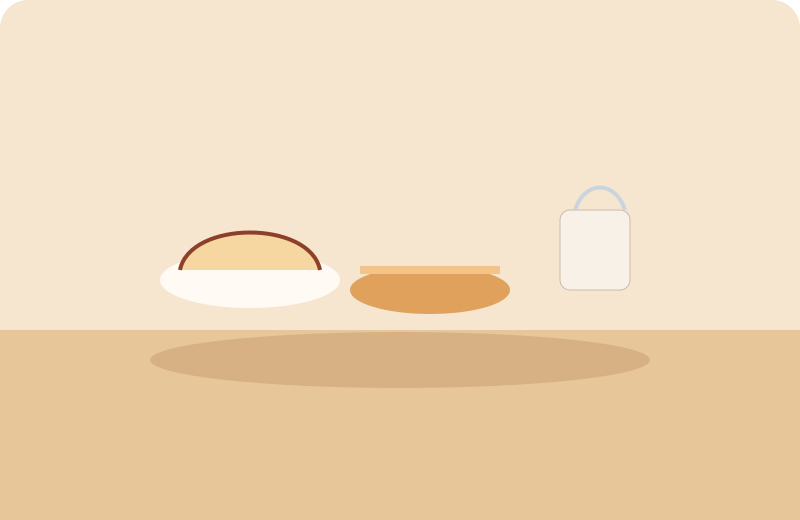
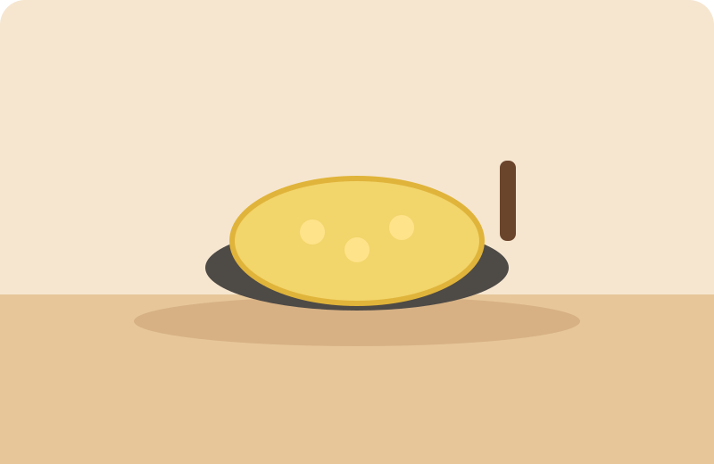

Breads
A community cookbook
Recipes worth keeping
Write down the dishes you want to remember, and browse a shelf of classic, generic home recipes. Anyone can read. An account is only for posting, commenting, hearts, and stars.

10 recipes
Desserts
Deep-Dish Apple Pie
Mains
Sunday Pot Roast

Sample recipeSides
Skillet Creamed Corn
Breakfast
Fluffy Breakfast Pancakes
Holidays
Holiday Cut-Out Sugar Cookies
Breads
Brown Sugar Banana Bread
Mains
Family-Style Meatloaf
Desserts
Cast-Iron Peach Cobbler
Opening soon
Granny's Kitchen Shop
Blank 4×6 recipe cards, a box to keep them in, a gift set, and The Granny Recipes Book — a 200-page spiral-bound cookbook as a PDF download or a mailed hardcopy.
Prices are not final, and nothing is for sale until checkout is turned on.